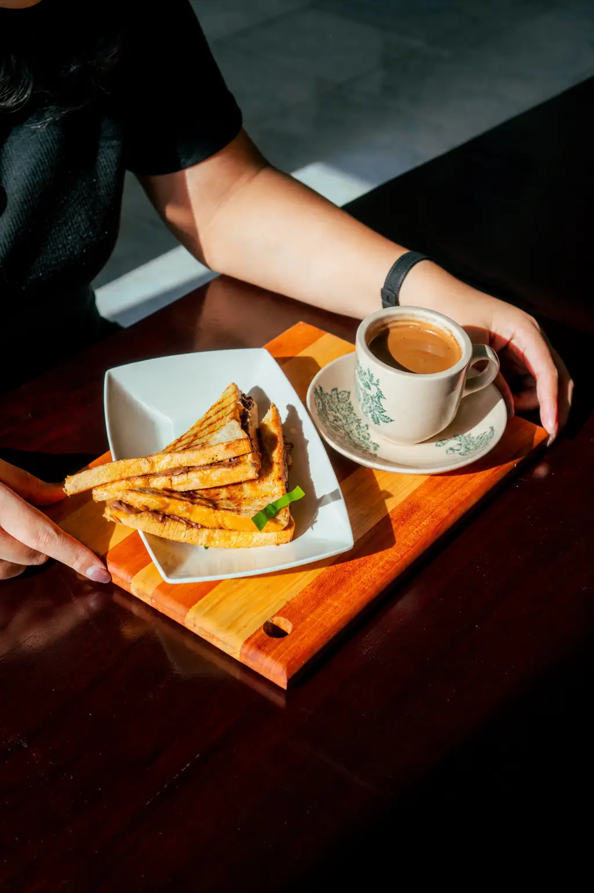

2nd Floor Indoor AC
A comfortable air-conditioned area for study, focused work, and small discussions.

Coffee shop and kopitiam in Manyar, Surabaya
Pernah Dekat is a cafe and kopitiam in Manyar, Surabaya. More than coffee, it is a place for focused work, warm tables, community gatherings, and conversations that last.
Our story
Pernah Dekat was built as an inclusive neighborhood space: a coffee shop where ideas, friendships, and small gatherings can begin at the same table.
Since opening on August 10, 2024, the shop has welcomed focused work sessions, late-night talks, and community moments in Manyar.
A place to feel close again.
The space

A comfortable air-conditioned area for study, focused work, and small discussions.
A relaxed indoor smoking floor for longer talks and late coffee sessions.
The 2nd and 3rd floors can host community events, watch parties, live music, and intimate gatherings.



Location and reservation
Find us at Jalan Raya Manyar No. 29, Surabaya. We are open daily until 02.00 AM for work, meetups, and easy late-night coffee.
Jalan Raya Manyar No. 29, Surabaya, East Java 60284
0822-8998-8224Open: Monday - Sunday, 10.00 AM - 02.00 AM